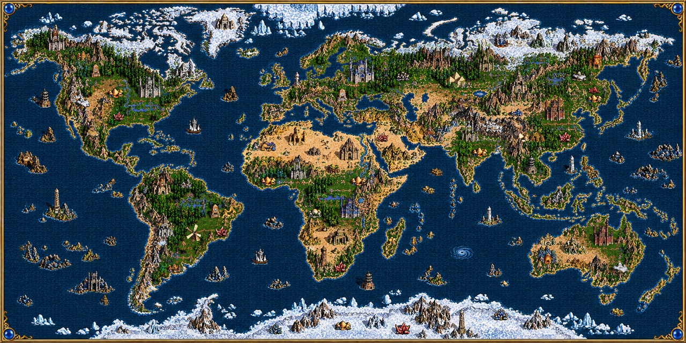

A world
without edges.
Heroes III on a map where east meets west and north meets south. Explore, find new paths, and play together.
Download for Apple SiliconExperimental preview. Original Heroes III game files are required and are not included.

Meet in
the lobby.
The lobby helps players find each other and create a room. Multiplayer in this build is still being tested.
- Install the Apple Silicon build and provide your Heroes III game files.
- In the launcher settings, set the lobby host to
46.229.214.241and the port to3031. - Open multiplayer and create a room. Everyone needs a compatible build.
Two worlds.
No borders.
Both maps have toroidal topology enabled. Copy the downloaded .vmap file into your VCMI Maps folder:
macOS: ~/Library/Application Support/vcmi/Maps/
Windows: %USERPROFILE%\Documents\My Games\vcmi\Maps\
On macOS, press ⌘⇧G in Finder to open the folder. Create Maps if it does not exist.
Earth — adapted from Earth Rules the World 2.0. Earth requires the Horn of the Abyss (HotA) mod and its required submods. Install and enable them in VCMI Launcher’s mod manager; compatibility depends on their versions. HotA is separate from the original Heroes III game files.
Download EarthOutcast-inspired — an experimental two-player map inspired by Jebus Outcast, not an exact conversion.
Download Outcast-inspired